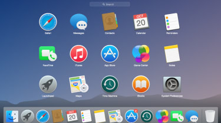

GUI
What Does Graphical User Interface (GUI) Mean?
A graphical user interface (GUI) is an interface through which a user interacts with electronic devices such as computers and smartphones through the use of icons, menus and other visual indicators or representations (graphics). GUIs graphically display information and related user controls, unlike text-based interfaces, where data and commands are strictly in text. GUI representations are manipulated by a pointing device such as a mouse, trackball, stylus, or by a finger on a touch screen.
The first human/computer text interface worked through keyboard input, with what is called a prompt (or DOS prompt). Commands were typed on a keyboard at the DOS prompt to initiate responses from a computer. The use of these commands and the need for exact spelling created a cumbersome and inefficient interface.
Arguably, the introduction and popularization of GUIs is one of the most important factors that made computer and digital technologies more accessible to average, less tech-savvy users. GUIs are, in fact, created to be intuitive enough to be operated even by relatively unskilled personnel who have no knowledge of any programming language. Rather than being fundamentally machine-centered, they are now the standard in software application programming because their design is always user-centered.
Techopedia Explains Graphical User Interface (GUI)
In the late 1970s, the Xerox Palo Alto research laboratory created GUIs, which are now common in Windows, macOS and many software applications. By using specially designed and labeled images, pictures, shapes and color combinations, objects were depicted on the computer screen that either resembled the operation to be performed, or were intuitively recognized by the user.
In 1983, Apple introduced the first commercial use of a GUI in the Lisa computer, followed shortly thereafter by the much more famous Apple Macintosh in 1984. Then, in 1985, Microsoft released Windows 1.0. The introduction of these systems revolutionized the use of personal computers, paving their way to reaching the general public. Before these, the use of command-line UIs restricted their use to advanced business users, scientists and information technology experts.
Today, each OS has its own GUI (such as Ubuntu for Linux). Software applications use these and add additional GUIs of their own, for example Microsoft Word and Excel, or Adobe Photoshop. All internet browsers, such as Chrome, Internet Explorer and Firefox use their own GUIs to allow the user to navigate through websites which may also have their own GUIs (such as Facebook, Instagram or WordPress sites). If a user opens, for example, a video from a streaming video player inside a website, they will interact with four different GUIs in total:
- The OS’s-
- The browser’s-
- The website’s-
- The video player’s-
Information is presented to the user via visual widgets that can be manipulated without the need for command codes. The user interacts with these elements of the interface (such as buttons, icons and menus), that respond in accordance with the programmed script, supporting each user’s action. The same application software or operating system may present different or slightly different GUIs as it is patched and evolves. Even if the core of the application and its functions stay the same, the appearance might be modified according to user needs or to improve user experience — such as the case of the various Windows versions throughout the years. Many GUIs use standard formats for representing text and graphical elements (such as fonts or scroll bars), so it is possible to share data between programs sharing the same GUI software.
How users interface with a computer is constantly being revised and reinvented. Human ingenuity has brought users from the keyboard to the mouse and trackball, touch screens and voice commands. A visual language has evolved as GUI has become commonplace in both operating systems (OSs) and software applications. Even those with limited computer skills can now, through the use of GUIs, learn how to use computer applications for word processing, finances, inventory, design, artwork or hobbies.
GUI example
